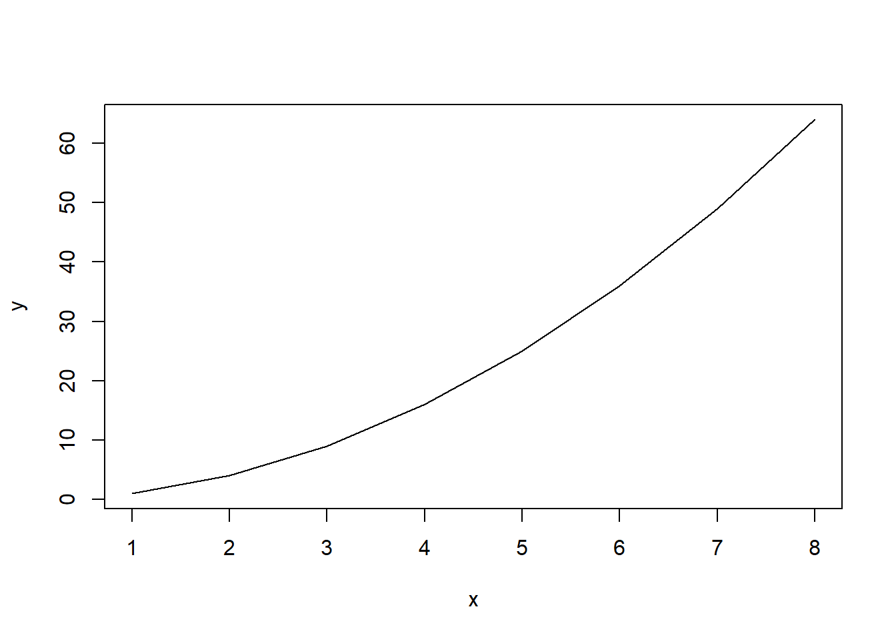
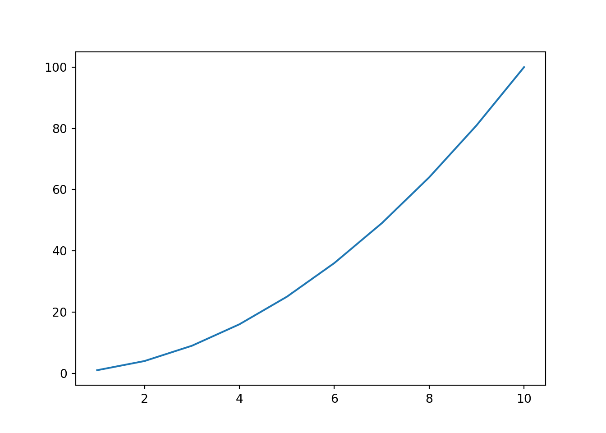

6 Functional Programming with R and Python
At this point we are ready to discuss the functional programming paradigm in R and Python. The other important paradigm, Object-Oriented, will be discussed in the following Chapter.
In using python in a functional paradigm, a script is built as a series of functions. Data is passed through one of more functions (ie. as series of functions) to carry out steps of a larger task set. When data is passed to a function to carry out some task or analysis on a dataset results may then printed out directly, stored in memory or on disk, or displayed in graphical form by passing the analysis to another set of functions such as those of matplotlib for plotting etc.
A function is a set of stored programmatic statements stored in an accessible form for reuse. The function is called in R or Python by simply inserting it by name in a statement to be executed by one of the interpreters.
6.1 Defining Functions
A function is defined in a specific format for each language.
6.1.1 R Scripting
doArea <- function(radius){
area <- pi * radius^2
}6.1.2 Python Scripting
import math
def calcArea(radius):
area = math.pi * radius**2
return area6.2 Calling and Using Functions
6.2.1 R Scripting
radius = 4
print(doArea(radius))## [1] 50.26548x = doArea(4) + 100
print(x)## [1] 150.26556.2.2 Python Scripting
import math
def calcArea(radius):
area = math.pi * radius**2
return area
print(calcArea(4))## 50.26548245743669Let’s discuss the differences in how the functions were called to be used. COnsider first that the book is set-up as written in rMarkdown which is running in an instance of R. The memory of the code chunk and the underling R which rmarkdown is running are the same. In python terms, the namespace is the same. This is not the case with the python code chunks. We have to explicitly pass to (and retrieve from) the R namespace for it to be accessible to the python chunk, running in it’s on (python) namespace. As a result we had to redefine the function in the same namespace in which we were calling it.
With R code chunks the R memory space is open throughout but the python chunks name space is closed each time the python chunk closes. This is a feature of how I am using the R environment to write this book, not of python per se.
Further, recalling we are writing scripts, the print statements are required for both to display the result. We could have used the cat() function of course to display the R output as well.
cat(x) # x is still in R memory here## 150.2655Note that the result number [1] is not printed with R using cat() or the python print() functions.
There are more subtlies of memory management in calling one language from inside the other. These will come up below but for now knowing how things behave in the R/rMarkdown environment as above will cover our memory space issues.
6.3 Writing Function Examples in R and Python
6.3.0.1 Example 1 A Surveyor’s Function
Lets write a function in R and Python to calculate the height of a tower knowing the angle of elevation at a given distance from the base. This would be something we might need when sighting through a surveyors transit.
Given a distance from the base of 1000 meters, how high is a tower whose top was measured at an angle of 25 degrees at that distance.
d = 1000 # distance in meters to base
ad = 25 # angle in degrees
# write a function to convert degrees to radians
deg2rad = function(angledeg){
angledeg * (pi/180)
}
# write function to calcular height from angle in degrees
ht = function(d, ad){
h = d*tan(deg2rad(ad))
}
# now call and output function with distance d and angle ad in degrees
cat("Tower Height in meters is: ", ht(d, ad), "\n") ## Tower Height in meters is: 466.3077So we have written 2 functions, one to convert degrees to radians, that is the expected measure of the angle going into ttigonometric functions of R. Then we wrote a function to accept degrees input and give the height in meters (the input distance units) The function definitions use the keyword ‘function, followed by zero or more arguments and then the code block of the function is set out by brace brackets’{ }’. The function is assigned to a name like a variable.
Lets do it with python now,
# set variables to problem givens
d = 1000 # distance in meters to base
ad = 25 # angle in degrees
# write a function to convert degrees to radians
def deg2rad(angledeg):
import math
return(angledeg * (math.pi/180))
# write function to calcular height from angle in degrees
def ht(d, ad):
import math
return (d*math.tan(deg2rad(ad)))
# now call and output function with distance d and angle ad in degrees
print("The height in meters of the tower is :", ht(d, ad))## The height in meters of the tower is : 466.3076581549986In the python declarations the definition starts with the keyword ‘def’ a name and zero or more arguments and there is a colon ‘:’ at the end of the first line. The code block of the function is also indented rather than set out by brace brakets ‘{ }’. The first line is the signature of the function.
Both functions return a value, typically the last value in the calculation chain for R but as an explicitly called return for python. Note for the two python functions one has a space after return and the other doesn’t. This is because the bracket do not contain return parmeters but group the expression to be returned.
Also as previously alluded to pi in R is a core CONSTANT but in python it is a CONSTANT in the math module which must be imported to use it. We could have just explicitly imported only pi at the start and referred to it directly by name as in R.
# Python code
print(pi)Gives an error:
Traceback (most recent call last): File “C:-code-148c67392482.txt”, line 1, in
print(pi) NameError: name ‘pi’ is not defined ```
from math import pi
print(pi)## 3.141592653589793Once again you must know where to go to get some constants and functions with python which are built-in in R. Check out the math module in the standard python library3.
6.4 Using the Core R and Python Standard Libraries
Core R distributions currently install with a base set of function packages. The Table in the Appendix 3 lists these.
The python standard libraries contain alot of modules which can be imported. They are grouped in modules by functionality. The functions contained in the modules can be looked up in the Official Documentation online or referring to the Hellmann2 book.
As done for the R base system in the Appendix, I also list the groups of python modules of the Standard Library in the Appendix 3 by kind as in the Python Documentation3, but generally including only occasional examples of the many functions each contain. Again a more exhaustive handling is available as indicated.
It’s a good time to dive into the functions of the core libraries and try some more sophisticated R and Python tasks. We’ll first compare loading and saving datasets in both languages. R has file functions for saving dataframes as comma separated variables, csv, files. We will then load this data back into R and python to compare these tasks in each.
6.4.1 R Scripting
The dataframe airquality is a built in dataset. Rather than display the whole tales head(n) displays the first n lines (default n=6). SImilarly tail(n) would display the last n lines. The named dataframe ‘table’ is created from airquality data. Then we tell R to write a file names airquality.csv. R automatically closes the file after writing is complete.
# loading dataset from base R called
head(airquality)## Ozone Solar.R Wind Temp Month Day
## 1 41 190 7.4 67 5 1
## 2 36 118 8.0 72 5 2
## 3 12 149 12.6 74 5 3
## 4 18 313 11.5 62 5 4
## 5 NA NA 14.3 56 5 5
## 6 28 NA 14.9 66 5 6table = airquality
write.csv(table,file="airquality.csv")6.4.2 Python Scripting
We need the io module for the file access function. The open() function opens the file “airquality.csv” for reading only (“r”) and creates a filehandle, we called file. Now, file is a handle object so here is a first nod to OOP dotted function syntax to read a line from it. Something more functionally intuitive, like readline(file) will yield an error. Because calling of R function use dot syntax calls this is not new to us here. Next chapter moves fully to OOP paradigm.
Then we print out what we read - a single line from file (in fact, the first line)
# Needs io module functions
import io
#load csv data with Python
file = open("airquality.csv", "r")
aline = file.readline()
print(aline)## "","Ozone","Solar.R","Wind","Temp","Month","Day"aline = file.readline()
print(aline)## "1",41,190,7.4,67,5,1file.closeWhen we read a line again, we read the next line. Python readline maintains a pointer it moves as we continue to readlines. The Two lines we printer were the column names as we saved them and a line of comma separated values.
Lets read the airquality.csv file back into R assigning a name “newtable” to the dataframe the read.csv command creates to store the data loaded.
# Load csv data with R
newtab = read.csv(file="airquality.csv", header=TRUE)
head(newtab)## X Ozone Solar.R Wind Temp Month Day
## 1 1 41 190 7.4 67 5 1
## 2 2 36 118 8.0 72 5 2
## 3 3 12 149 12.6 74 5 3
## 4 4 18 313 11.5 62 5 4
## 5 5 NA NA 14.3 56 5 5
## 6 6 28 NA 14.9 66 5 6R automatically loads the csv data back into a dataframe. However, the python readline reads the data as a data stream (a stream of characters) which we told it to store in the aline variable. python does not in this case parse the stream int any special structure - that is left to us to do.
We see something else too. R wrote the row numbers to the file (because we didn’t say otherwise) and assigned a new set again when we loaded the data again.
6.4.3 More Function Examples
Basic plotting functions are part of the r-base system we can easily plot a function,
# Create a function to make a line plot or squares of x between 1 and 8
linePlotMySquares <-function(type = "l", ...) {
x = c(1,2,3,4,5,6,7,8)
y = x**2
plot(x, y, type = type, ...)
}
# Call our function
linePlotMySquares()
Python does not have a basic plotting function and the Standard Library has not provided one either. You casn write your own but there is a popular python library from the SciPy folks called Matplotlib which once installed from the shell with PIP,
> pip install matplotlib
OR
> python -m pip install matplotlibis available for import, and it contains a module called pyplot which has a simple plot function
from matplotlib import pyplot as plt # import pyplot library module from matplotlib
x = list(range(1,11)) # make a sequence of numbers from 1 through 8, called x
y = [0,] # create a list, must have at least one element to concat to
for val in x: # loop through list x to calculate squares
y = y + [val**2,] # concatinate each square to list y as calculated
y = y[1:11] # select the values 1 to 8 from y, call them y
plt.plot(x,y) # plot the x vs y pairs
plt.show() # show the plot
There are a few things to discuss here. First is the structure of the matplotlib library. Python code for import are module files (which end in the .py extension like any python scripts or programs).
A script or program is generally a directly executable piece of code, run by itself. A module is generally a library, imported by other pieces of code.
Note that there’s no internal distinction – both are executable and importable, although library code often won’t do anything (or will just run its unit tests) when executed directly and importing code designed to be a script will cause it to execute, hence the common if name == “main” test.17
So what we are doing with from matplotlib import pyplot as plt is saying: “from the file matplotlib(.py) import the functions in the pyplot class and call the namespace containing them plt”" so that we can call them.
Note: pip is a module, but runs independently from the command line because it contains script with a __main__ function accessed via pip3.exe to setup and start the process.
It also runs from command line as a module executed by python with the -m switch, by
python -m pip install <some package>
the -m switch tells python to run the module as a script. Most library modules are not executable as python scripts or if they are, run self-tests called by a main() function.